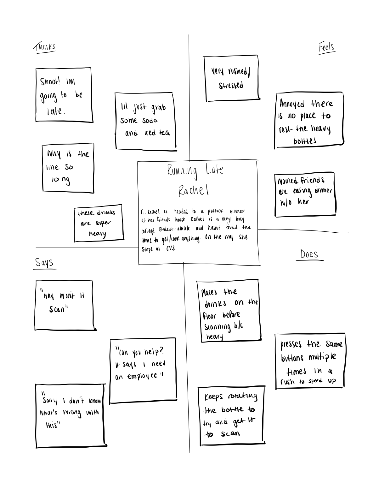
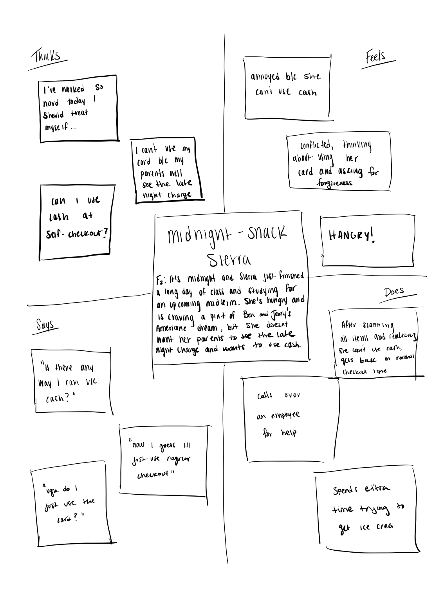
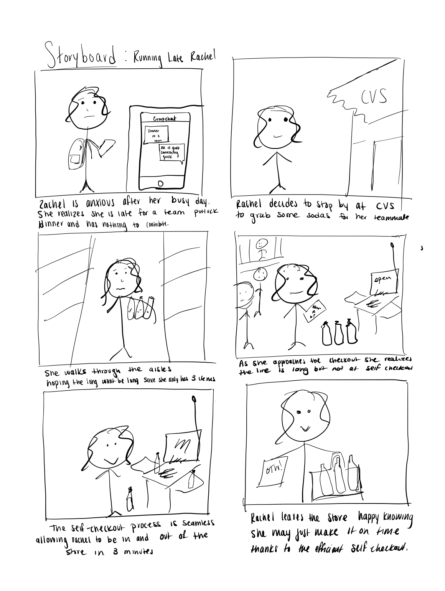

The purpose of the self-checkout is to make the checkout process easier and more efficient for the user. The interface is composed of a large screen, scanner, scale, and card reader. When approaching the self-checkout the on-screen display will indicate if the register is open. If so, the screen will begin guiding the user to scan their items. Users scan one item at a time and place them on the scale. Once complete the user follows directions on the touchscreen which will then refer them to the card reader for checkout. If at any point something goes wrong the indicator light will turn on prompting an employee response. The self-checkout kiosk is also voice-enabled and clearly and concisely will tell the user what to do with each step in the process.
- Users don’t read the instructions nor let the voice instructions play and often tap the screen to begin scanning items right away.
- Users follow same sequence of tapping the screen, scanning, placing items on the scale, purchasing items via credit/debit card, and bagging items
- The process seems pretty seamless and users seem to know exactly how to use the self-checkout, from scanning items all the way through to payment
1. What do you like most about the self-checkout kiosk?
2. What do you dislike?
3. Is it easy to use?
4. Can you tell when something is wrong?/Do you know what to do if something is wrong?
5. Are the directions clear?
6. What could be improved?
- Users claim that the interface is intuitive and easy to use
- When something goes wrong they know the light indicates an employee is coming to help. The screen notifies the user with clear instructions.
- Users dislike the inability to use cash at the self checkout
- Users noted that the blue light around the screen made it seem like the machine was broken since green signifies working
- Users sometimes find the scale hard to identify and find it too small for all items at times
Rachel is headed to a potluck dinner at her friends house. Rachel is a very busy college student-athlete and hasn't found time between practice and class to get/cook anything for the dinner. On the way to her friends house, Rachel stops at CVS.
When Rachel arrives at CVS, she decides the easiest thing to bring is some soda and iced tea. Her goal is to be in and out of the store as quickly as possible. She realizes the line is long and doesn't want to wait since she only has three items. So, Rachel heads to the self-checkout hoping for a fast and seamless process. At first she struggles to find a place to put her items temporarily since they cannot be placed on the scale until after they are scanned. So, Rachel places her items on the floor. She then finds herself flustered as she can't fit all items on the scale. The register then calls over for an employee as Rachel feels anxious for holding up the line. She leaves even more rushed than before.
Rachel represents the users of my interface because she is everybody. When people stop at CVS it is often out of convenience. The users tend to need a few personal items, household items, or maybe want to grab a little snack. The general customer at CVS is not there to shop and spend hours, but instead to grab what they need and head out as quickly as possible. Rachel in this case represents a customer who just needs to grab an item for an event she forgot to prepare for. The self checkout is meant to make customer checkout more efficient for emplyees and people like Rachel in a hurry.
It's midnight and Sierra, a college freshman, just finished a long day of classes and studying for an upcming midterm. She's hungry and has decided she is craving a pint of Ben & Jerry's Americone Dream. However, she doesnt want her parents to see the charge on her card since it's super late and she doesn't want them to think anything of it. She decides she will pay in cash. Sierra decides to go to CVS and scope out the ice cream selection. She gets her delicious pint of Ben & Jerry's and heads to the self-checkout. She scans her items and gets ready to pay. She then realizes she can't use cash at the self-checkout. After a long day Sierra is frustrated she just wants some ice cream. After wasting 5 minutes at the self-checkout she now finds herself in line behind all the other midnight snack students.
Sierra represents the users of my chosen interface because many customers head to CVS late at night for a snack or maybe something they have forgotten. Oftentimes, especially on a college campus, you will see many people in CVS during the evening time either grabbing themselves a sweet snack or anything they need while other stores are closed. Sierra also represents a customer that may not be using a credit or debit card to checkout. The self-checkout does not work for cash leaving anyone without a card left to stand in line.
The following is a storyboard based on one of my personas, Rachel. Here I depict Rachel's journey using the self-checkout in a successful manner eliminating all frustrations from her "previous experience".
